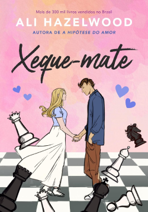
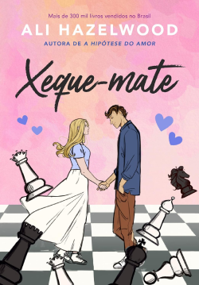

Título: A Hipótese do Amor
Autora: Ali Hazelwood
Ano de lançamento: 2022
Número de páginas: 336
Editora: Editora Arqueiro
Classificação Indicativa: 18 anos
Para convencer a sua melhor amiga, Anh, de que já superou seu ex, do qual nunca gostou, para que os dois possam sair juntos, Olive Smith beija o primeiro cara que vê pela frente, dizendo a Anh que ele é seu novo namorado. Mas, o que ela não esperava, é que esse cara seria Adam Carlsen, o professor mais odiado, arrogante, chato, idiota e bonito de todo o departamento de doutorado em biologia de Stanford.
Agora os dois precisam entrar em um relacionamento falso, onde ambas as partes ganharão alguma coisa caso tenham sucesso, mas será que esse plano dará certo e eles terminarão na data prevista ou eles se renderão aos seus sentimentos no final?
Eu AMEI A Hipótese do Amor, um romance leve que te prendo do início ao fim. Adorei os personagens, principalmente a Anh, com seu jeito feminista e fofa e, é claro, a sua mania de tentar ajudar a Olive e acabar piorando as coisas (ou não), sem perceber.
Além da história principal da Olive e do Adam, temos também outras histórias secundárias, como: romances de outros personagens, o trabalho da Olive, assédio e machismo em locais de trabalho...
Mas tiveram dois pontos que me decepcionaram um pouco: a escrita em terceira pessoa e que, em algumas partes, ficou parecendo o clichesinho do bad-boy e da virgem, e não era esse tipo de história que estava procurando no momento.

09/10
A Hipótese do Amor é o primeiro de uma coleção de livros independentes sobre romances entre cientistas. Achei muito interessante a temática da coleção por nunca ter visto algo do tipo antes.
.png)


A Hipótese do Amor contem um conto extra em e-book que contam algumas partes do livro do ponto de vista do Adam.

Ali Hazelwood é autora de comédias românticas em que as protagonistas são mulheres das áreas de ciências, tecnologia, engenharia e matemática.
Ph.D. em neuroiência, ela também tem vários artigos publicados.
Nascida na Itália, ela morou na Alemanha e no Japão antes de se mudar para os Estados Unidos onde mora com o seu marido e seus dois gatos.
(publicados no Brasil)
 

(publicados no Brasil)


Este livro contém:

Amante de comédias românticas, claro que Ali não poderia estar de fora de sua lista!
Além de resenhista da Leitura da Meia-Noite, Suzana também produz nosso design,
deixando seus textos e o de outros colaboradores do melhor jeito para vocês, leitores.
Clique aqui para saber mais sobre.